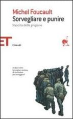

27:48 · 4 OPERE
Il copione ideale per un riassetto del mondo.
Il filo del discorso
Il rapporto fra ragione, realtà e dipendenza dall’autorità è il filo conduttore di questo intervento. Dr Divago distingue la razionalità come ricerca di un ordine comprensibile dalla sua riduzione a strumento e descrive la tecnologia come possibile ambiente di distrazione e soggezione. Il richiamo all’Illuminismo di Kant introduce il coraggio di servirsi del proprio intelletto; la critica si estende anche a un dissenso che, secondo il relatore, ripete formule senza studiarne le premesse. Nella seconda parte viene ripreso un testo del suo blog del 2009, L’Ansia e la Crisi, per sostenere una continuità fra crisi economiche, paura e redistribuzione del potere. Il rifiuto di un incontro e gli altri episodi personali restano racconti dell’autore. Le conclusioni su pandemia, conflitti e intenzioni dei protagonisti sono sue interpretazioni politiche, non dimostrazioni di un piano coordinato. Alla denuncia collettiva si affianca una proposta individuale: tornare alla lettura, confrontare le parole con l’esperienza e interrogare le proprie categorie prima di affidarsi a spiegazioni ricevute.
I libri nel discorso

La Repubblica
Identificazione probabile
Copertina: Laterza · La Repubblica · edizione con testo a fronte di riferimento
Immagine associata all’ISBN di riferimento e controllata visivamente; edizione e traduzione non identificate come quelle citate o lette nel video.
La caverna platonica applicata all’ambiente elettronico; titolo del dialogo non pronunciato.
Passaggio 3:40 ↗ · Fonti e libro ↗
Risposta alla domanda: che cos’è l’Illuminismo?
Copertina della raccolta che comprende il saggio sull’Illuminismo: Firenze University Press · Sette scritti politici liberi · 2011 · a cura di Maria Chiara Pievatolo
Copertina del volume cartaceo FUP che comprende il saggio, riscontrato dal catalogo universitario. L’ISBN appartiene alla raccolta; il filmato non annuncia un’edizione e il titolo del saggio è un’identificazione probabile della citazione.
Kant, Illuminismo e uscita dalla Unmündigkeit: riferimento riconoscibile al saggio del 1784.
Passaggio 5:42 ↗ · Fonti e libro ↗
Bibbia
Identificazione probabile
Copertina: San Paolo, 2014 · Nuova Versione dai Testi Antichi · edizione di riferimento
Invito evangelico a guardare gli uccelli; riferimento probabilmente a Matteo 6,26.
Passaggio 10:39 ↗ · Fonti e libro ↗
Sorvegliare e punire. Nascita della prigione
Identificazione probabile
Copertina: Edizione italiana Einaudi Tascabili, traduzione di Alcesti Tarchetti; ISBN 9788806174767. La scheda libraria indica 2005 e una successiva data commerciale 2012, che non si assume come prima pubblicazione.
Immagine autentica dell’opera, controllata visivamente; l’edizione di riferimento non è attribuita al filmato.
La visibilità come trappola è associata al Panopticon di Bentham; formulazione riscontrata in Foucault, non citazione testuale accertata di Bentham.
Passaggio 19:24 ↗ · Fonti e libro ↗